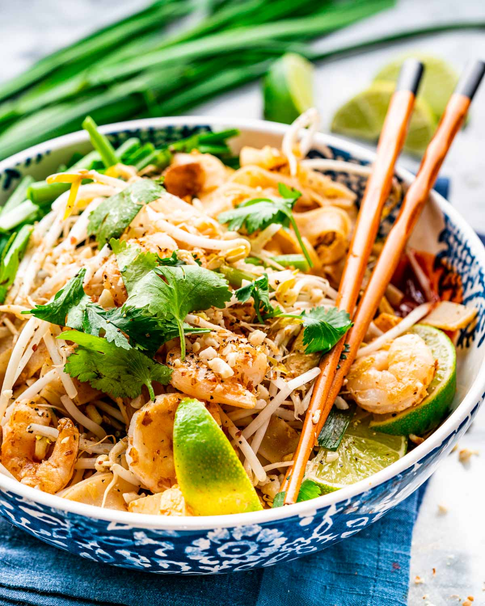

Shrimp Pad Thai

The Best Shrimp Pad Thai!
This easy Shrimp Pad Thai is a family favorite around my house. I'm sure it will be around yours too!
Ingredients
Sauce
- 3 tablespoon brown sugar
- ¼ cup tamarind paste
- 2 tablespoon fish sauce
- 3 tablespoon water
Pad Thai
- 6 ounce rice noodles
- 2 medium shallots (minced)
- 3 cloves garlic (minced)
- 2 tablespoon dried shrimp (rinsed and chopped)
- 2 tablespoon sweet daikon radishes (chopped)
- 8 ounce firm tofu (cut into small pieces)
- 1 tablespoon Sriracha sauce
- 1 cup fresh bean sprouts
- 1 cup Chinese chives (or garlic chives)
- ¼ cup roasted peanuts (finely chopped)
- 2 to 3 tablespoon peanut oil
- 1 pound shrimp (shells removed and deveined if needed)
- 2 eggs
Additional Toppings
- 1 cup freash bean sprouts
- 1 cup Chinese chives
- ¼ cup roasted peanuts (chopped)
- lime wedges
- 2 tablespoon fresh cilantro
- Sriracha sauce
Instructions
- Place noodles in a large bowl. Add enough cold water to cover them and let them rest for 1 hour or until noodles are pliable but not soft. Drain well in a colander. They will change color from translucent to white.
- In a small bowl whisk all the sauce ingredients together and set aside. In a bowl combine the shallots, garlic, dried shrimp, radishes, tofu and Sriracha. In another bowl combine the bean sprouts, chives, and ¼ cup of the peanuts.
- In a medium skillet heat 1 tbsp of peanut oil over high heat. Add the shrimp and cook and stir about 1 to 2 minutes or until shrimp turns pink and starts to slightly char. Transfer to a bowl. Add the rest of the oil to the skillet or wok.
- Add the rest of the oil to the skillet or wok. Add the tofu mixture to the skillet and saute for about minute. Add the noodles and sauce to the wok and toss everything. There is water in the sauce so the noodles will cook and absorb the liquid.
- Move the noodles to the side of the wok and add the egg and break the yolks. Add a bit more oil if necessary before adding the eggs. Let them cook for 30 seconds then scramble them. Toss everything together.
- Add the bean sprouts and chives mixture to the skillet and toss everything. Turn off the heat.
- To serve divide noodles mixture among 2 or 4 plates, depending on the size of the meal you want. Top with shrimp then sprinkle each serving with bean sprouts, extra chives, peanuts and lime wedges. Serve with fresh cilantro and Sriracha on the side.
Enjoy!